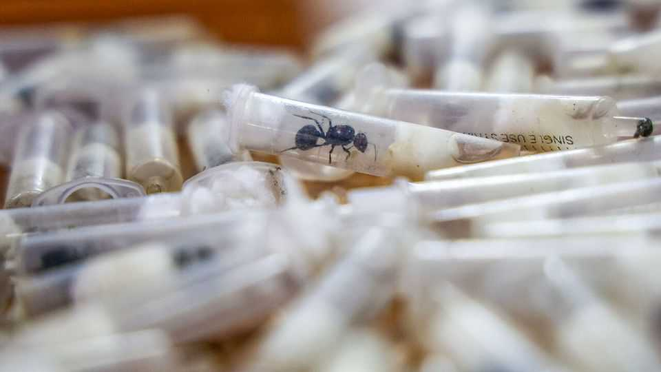

Why smugglers are stealing Kenya’s ants
A global craze for pet ants has created a lucrative black market

Aug 27th 2026
IT WAS A smuggling operation to make your skin crawl. At Nairobi airport earlier this year, Kenyan authorities discovered more than 2,200 African harvester ants hidden in a man’s luggage. Most were packed inside small plastic tubes plugged with damp cotton, designed to keep the ants alive for weeks while they made it to their recipients, collectors in China. In April the smuggler was sentenced to a year in prison. His conviction followed a series of similar cases, including the arrest last year of two Belgian teenagers carrying around 5,000 ants.
A global craze for pet ants has fuelled a booming black market in live queen ants. An African harvester queen can sell for more than $200 in the black market (it costs barely $3 in Kenya). The country has become a hub for illegal trading because it has abundant populations of the species, alongside established smuggling networks that have long trafficked wildlife.
Ant-keeping became a popular pastime during the pandemic as people searched for indoor hobbies. Enthusiasts keep colonies in transparent formicariums—miniature “ant cities”—where they watch the insects dig tunnels and forage for food. Social media has helped turn the pastime into a global phenomenon. YouTube channels such as AntsCanada, which has more than 7m subscribers, narrate the stories of individual colonies like nature documentaries, from queens founding new nests to battles with rival species.
Most ant-keeping is perfectly legal. Specialist dealers breed the insects and sell them in licensed shops. But demand for rare and exotic ants has outpaced legal supply. African harvester ants are especially prized because they are among the world’s largest ant species and display complex social behaviours, making them “the tigers of the ant world”, says Dino Martins, an entomologist and evolutionary biologist based in Kenya.
Scientists worry that removing large numbers of ants could damage Kenyan ecosystems. Traffickers target queens because each colony has just one breeding female. She typically lives for 25 years and can produce a colony of thousands of workers. Ants play a crucial role in east Africa’s savannahs. As they forage, they collect and disperse grass seeds, helping maintain the diverse grasslands on which much wildlife depends. The ants’ vast underground nests add oxygen to the soil and create nutrient-rich hotspots where plants grow more easily. Meanwhile many other animals, such as pangolins, feast on the ants themselves.
Authorities are scrambling to stop the illegal exodus. Kenya Wildlife Service has pushed for tougher penalties and stepped up inspections at airports. But conservationists say the recent seizures are probably only the tip of the anthill. And interceptions address the trade only after the damage has been done. Alongside tougher enforcement, Mr Martins argues, authorities should educate collectors and local communities about the insects’ ecological importance. Unless demand falls, smugglers will find new ways to keep ants marching across borders. ■
Sign up to the Analysing Africa, a weekly newsletter that keeps you in the loop about the world’s youngest—and least understood—continent.